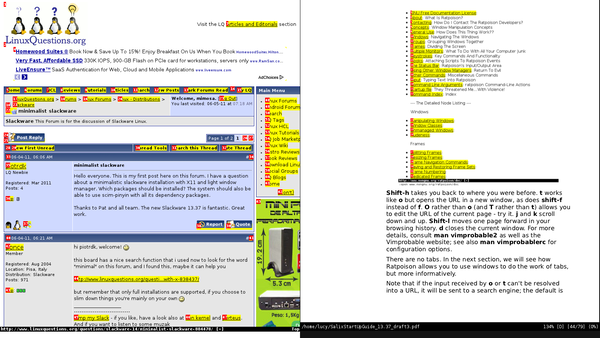

Let's now see how Ratpoison deals with several open windows.
C-t w generates a list showing all of them. Notice that each one
is associated with a number: C-t followed by the number
changes to that one. C-t C-t returns to the
previous window. This is very useful indeed for switching rapidly back
and forth between two apps - for instance, an editor and a browser -
and is an example of how Ratpoison shines ergonomically. C-t k
closes the current window, and C-t shift-k kills the
current application. To see a list of commands, type C-t ?
for further detail, see also
man ratpoison
and the online manual, which we opened above with Vimprobable2 .
To work with two or more windows together, Ratpoison allows the user
to tile windows. C-t s splits the screen with the current
window above whichever window was last open; C-t S splits
them horizontally. These steps can be repeated to split the focused
window further. C-t TAB (or C-t and an arrow
key) moves the focus around, and C-t C-[arrow] swaps the
tiled windows over. C-t Q undoes the splitting and allows
the currently focused window to fill the screen. In practice, it's
rarely useful to have more than one or two windows visible:
